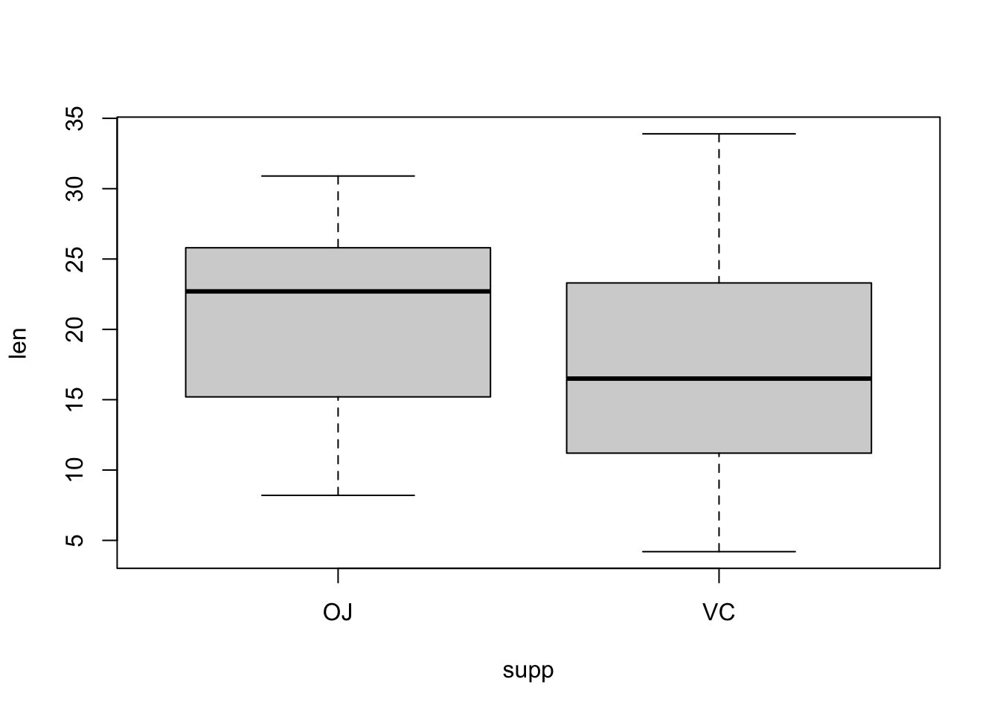

Tutorial 03
André Victor Ribeiro Amaral
Problem 01
An experiment is designed to test the tensile strength of Portland cement. Four different mixing techniques that can be used economically are tested and the resulting tensile strength is measured. A completely randomized experiment was conducted with four replications for each mixing technique and the following data were collected
data <- data.frame(mixingType = as.factor(rep(x = LETTERS[1:4], each = 4)), strength = c(3129, 3000, 2865, 2890, 3200, 3300, 2975, 3150, 2800, 2900, 2985, 3050, 2600, 2700, 2600, 2765))
data## mixingType strength
## 1 A 3129
## 2 A 3000
## 3 A 2865
## 4 A 2890
## 5 B 3200
## 6 B 3300
## 7 B 2975
## 8 B 3150
## 9 C 2800
## 10 C 2900
## 11 C 2985
## 12 C 3050
## 13 D 2600
## 14 D 2700
## 15 D 2600
## 16 D 2765- Do boxplots for the tensile strength as a function of treatment. Comment on what you observe.
attach(data)
boxplot(formula = strength ~ mixingType)The boxplots show similar dispersion in all the boxes, backing the assumption that variances are equal for all treatments. We see also that treatment B is best while D is worst. Also, since the box for D does not overlap the other boxes, the difference between D and the rest will probably be significant.
- Calculate summary statistics for the different treatments. Comment on the values for the variance.
str(data)## 'data.frame': 16 obs. of 2 variables:
## $ mixingType: Factor w/ 4 levels "A","B","C","D": 1 1 1 1 2 2 2 2 3 3 ...
## $ strength : num 3129 3000 2865 2890 3200 ...tapply(X = strength, INDEX = mixingType, FUN = summary)## $A
## Min. 1st Qu. Median Mean 3rd Qu. Max.
## 2865 2884 2945 2971 3032 3129
##
## $B
## Min. 1st Qu. Median Mean 3rd Qu. Max.
## 2975 3106 3175 3156 3225 3300
##
## $C
## Min. 1st Qu. Median Mean 3rd Qu. Max.
## 2800 2875 2942 2934 3001 3050
##
## $D
## Min. 1st Qu. Median Mean 3rd Qu. Max.
## 2600 2600 2650 2666 2716 2765tapply(X = strength, INDEX = mixingType, FUN = var)## A B C D
## 14534.00 18489.58 11722.92 6556.25The variances do not seem to be close.
- Do an analysis of variance table and test whether the mixing techniques have an effect on the tensile strength. Use level \(\alpha = 0.01\) for this test. What are your conclusions?
We can do an anova table in two ways. Using lm() we have
lm1 <- lm(strength ~ mixingType)
summary(lm1)##
## Call:
## lm(formula = strength ~ mixingType)
##
## Residuals:
## Min 1Q Median 3Q Max
## -181.25 -69.94 11.38 63.12 158.00
##
## Coefficients:
## Estimate Std. Error t value Pr(>|t|)
## (Intercept) 2971.00 56.63 52.468 1.51e-15 ***
## mixingTypeB 185.25 80.08 2.313 0.0392 *
## mixingTypeC -37.25 80.08 -0.465 0.6501
## mixingTypeD -304.75 80.08 -3.806 0.0025 **
## ---
## Signif. codes: 0 '***' 0.001 '**' 0.01 '*' 0.05 '.' 0.1 ' ' 1
##
## Residual standard error: 113.3 on 12 degrees of freedom
## Multiple R-squared: 0.7609, Adjusted R-squared: 0.7011
## F-statistic: 12.73 on 3 and 12 DF, p-value: 0.0004887anova(lm1)## Analysis of Variance Table
##
## Response: strength
## Df Sum Sq Mean Sq F value Pr(>F)
## mixingType 3 489740 163247 12.728 0.0004887 ***
## Residuals 12 153908 12826
## ---
## Signif. codes: 0 '***' 0.001 '**' 0.01 '*' 0.05 '.' 0.1 ' ' 1And using aov() we have
mod1 <- aov(strength ~ mixingType)
summary(mod1)## Df Sum Sq Mean Sq F value Pr(>F)
## mixingType 3 489740 163247 12.73 0.000489 ***
## Residuals 12 153908 12826
## ---
## Signif. codes: 0 '***' 0.001 '**' 0.01 '*' 0.05 '.' 0.1 ' ' 1anova(mod1)## Analysis of Variance Table
##
## Response: strength
## Df Sum Sq Mean Sq F value Pr(>F)
## mixingType 3 489740 163247 12.728 0.0004887 ***
## Residuals 12 153908 12826
## ---
## Signif. codes: 0 '***' 0.001 '**' 0.01 '*' 0.05 '.' 0.1 ' ' 1The p-value for the test that the treatments have no effect on the tensile strength of Portland cement is \(0.00049\), so we reject the null hypothesis of no effects.
- What are the estimated values for the average values for the four treatments \(\hat{\mu} + \hat{\tau}_i\), \(i = 1, \cdots, 4\)? What are the estimated values for the effects \(\tau_i\), \(\forall i\)? Use
model.tables()for this.
model.tables(x = mod1, type = 'means', se = TRUE)## Tables of means
## Grand mean
##
## 2931.812
##
## mixingType
## mixingType
## A B C D
## 2971.0 3156.2 2933.8 2666.2
##
## Standard errors for differences of means
## mixingType
## 80.08
## replic. 4model.tables(x = mod1, type = 'effects', se = TRUE)## Tables of effects
##
## mixingType
## mixingType
## A B C D
## 39.19 224.44 1.94 -265.56
##
## Standard errors of effects
## mixingType
## 56.63
## replic. 4- What are the estimated values for the variance \(\sigma^2\) and standard deviation \(\sigma\) of the experimental error?
The estimated variance for the experimental error is found in the ANOVA table as the MSE for residuals, which in this case is \(12826\). The standard deviation is
sqrt(12826)## [1] 113.2519# Alternatively, one can use the following command
summary(lm1)$sigma## [1] 113.2506- Make residual plots for checking assumptions. Do you think the usual assumptions for the model are reasonable in this experiment?
par(mfrow = c(1, 2))
plot(mod1, which = c(1, 2))par(mfrow = c(1, 1))Normality seems a reasonable assumption, judging by the plots, but equal variances, not so much.
- So far we have judged whether variances are uniform across treatment levels using graphs but there is a test for this, known as Levene’s test. This test is available in the
carpackage asleveneTest(), with argument the result of anlm()model. Use this test to determine whether variances are homogeneous across mixing techniques.
library('car')
leveneTest(lm1)## Levene's Test for Homogeneity of Variance (center = median)
## Df F value Pr(>F)
## group 3 0.1833 0.9057
## 12The p-value is large so we fail to reject the null hypothesis of equal variances.
- Use the Shapiro-Wilk test for normality on the normalized residuals.
shapiro.test(residuals(lm1))##
## Shapiro-Wilk normality test
##
## data: residuals(lm1)
## W = 0.97046, p-value = 0.846The p-value is large so we fail to reject the null hypothesis of normality for the residuals.
- Do pairwise comparisons using Tukey’s Honest Significant Difference method. Plot the confidence intervals. What comparisons are significant according to this method?
mod1.tky <- TukeyHSD(mod1)
mod1.tky## Tukey multiple comparisons of means
## 95% family-wise confidence level
##
## Fit: aov(formula = strength ~ mixingType)
##
## $mixingType
## diff lwr upr p adj
## B-A 185.25 -52.50029 423.00029 0.1493561
## C-A -37.25 -275.00029 200.50029 0.9652776
## D-A -304.75 -542.50029 -66.99971 0.0115923
## C-B -222.50 -460.25029 15.25029 0.0693027
## D-B -490.00 -727.75029 -252.24971 0.0002622
## D-C -267.50 -505.25029 -29.74971 0.0261838plot(mod1.tky)
All pairwise comparison involving treatment D are significant (at the 5% level). This treatment is different from the rest but the others cannot be distinguished.
- If you had to choose a mixing technique, which one would you choose and why?
A, B, or C, if the price is the same; otherwise, the cheapest among the three.
Problem 02
For this exercise, we will use the data set InsectSprays, which is available in R. In this experiment, 6 different insecticides were used and the number of dead insects in each plot were counted. There were 12 replications for each treatment level (insecticide), for a total of 72 observations.
head(InsectSprays)## count spray
## 1 10 A
## 2 7 A
## 3 20 A
## 4 14 A
## 5 14 A
## 6 12 A- Draw a boxplot for the results and add axes labels and a title. Add the points for each treatment level. Observe that there is overplotting. Add some noise in the horizontal direction to avoid this problem. Comment on what you observe.
attach(InsectSprays)
boxplot(count ~ spray, data = InsectSprays, xlab = "Type of spray", ylab = "Insect count", main = "InsectSprays data")
points(count ~ jitter(as.numeric(spray)), data = InsectSprays)Variance seems to be proportional to insect count.
- Do an analysis of variance and test whether the different insecticides have an effect. Use level \(\alpha = 0.01\) for this test. What are your conclusions?
fm1 <- aov(count ~ spray, data = InsectSprays)
summary(fm1)## Df Sum Sq Mean Sq F value Pr(>F)
## spray 5 2669 533.8 34.7 <2e-16 ***
## Residuals 66 1015 15.4
## ---
## Signif. codes: 0 '***' 0.001 '**' 0.01 '*' 0.05 '.' 0.1 ' ' 1The p-value for the test of no treatment effect is practically zero, so we reject the null hypothesis that the treatments have no effect.
- What are the estimated values for the average values for the six treatments \(\hat{\mu} + \hat{\tau}_i\), \(i = 1, \cdots, 6\)? What are the estimated values for the effects \(\tau_i\), \(\forall i\)? Use
model.tables()for this.
model.tables(x = fm1, type = 'means', se = TRUE)## Tables of means
## Grand mean
##
## 9.5
##
## spray
## spray
## A B C D E F
## 14.500 15.333 2.083 4.917 3.500 16.667
##
## Standard errors for differences of means
## spray
## 1.601
## replic. 12model.tables(x = fm1, type = 'effects', se = TRUE)## Tables of effects
##
## spray
## spray
## A B C D E F
## 5.000 5.833 -7.417 -4.583 -6.000 7.167
##
## Standard errors of effects
## spray
## 1.132
## replic. 12- What are the estimated values for the variance \(\sigma^2\) and standard deviation \(\sigma\) of the experimental error?
The estimated variance for the experimental error is found in the ANOVA table as the MSE for residuals, which in this case is \(15.4\). The standard deviation is
sqrt(15.4)## [1] 3.924283# Alternatively, one can use the following command
summary(lm(count ~ spray, data = InsectSprays))$sigma## [1] 3.921902- Make residual plots for checking assumptions. Do you think the usual assumptions for the model are reasonable in this experiment?
par(mfrow = c(1, 2))
plot(fm1, which = c(1, 2))par(mfrow = c(1, 1))In this case the plots do not look good. The first one shows that variance increases with fitted value; in particular, the points on the right of the graph, which correspond to larger fitted values, have a wider spread than the points on the left of the graph. On the other hand, the Normal Q-Q plot shows a good fit at the center of the sample, but both tails are from the straight line.
- Use Levene’s test for equal variances and Shapiro-Wilk for normality using this model and comment on your results.
library('car')
leveneTest(count ~ spray)## Levene's Test for Homogeneity of Variance (center = median)
## Df F value Pr(>F)
## group 5 3.8214 0.004223 **
## 66
## ---
## Signif. codes: 0 '***' 0.001 '**' 0.01 '*' 0.05 '.' 0.1 ' ' 1shapiro.test(residuals(fm1))##
## Shapiro-Wilk normality test
##
## data: residuals(fm1)
## W = 0.96006, p-value = 0.02226Levene’s test has a small p-value and we reject the hypothesis of homoscedasticity. The Shapiro-Wilk test has a moderately small p-value, and the normality hypothesis for the residuals may be suspect.
- Consider an alternative model using the square root of the number of counts. Obtain the analysis of variance table and compare with the previous model.
fm2 <- aov(sqrt(count) ~ spray, data = InsectSprays)
summary(fm2)## Df Sum Sq Mean Sq F value Pr(>F)
## spray 5 88.44 17.688 44.8 <2e-16 ***
## Residuals 66 26.06 0.395
## ---
## Signif. codes: 0 '***' 0.001 '**' 0.01 '*' 0.05 '.' 0.1 ' ' 1Again, the p-value for the overall test is practically zero. Observe the reduction in MSE, which is the estimated error variance.
- Draw the diagnostic plots for this model and comment.
par(mfrow = c(1, 2))
plot(fm2, which = c(1, 2))par(mfrow = c(1, 1))Both plots look much better now. The first one shows a more homogeneous spread of points for all fitted values. Also, in the second plot, the fit is very good, so the hypothesis of normality seems to be valid now.
- Again, use Levene’s tests and Shapiro-Wilk and comment on your results
leveneTest(sqrt(count) ~ spray)## Levene's Test for Homogeneity of Variance (center = median)
## Df F value Pr(>F)
## group 5 0.8836 0.4971
## 66shapiro.test(residuals(fm2))##
## Shapiro-Wilk normality test
##
## data: residuals(fm2)
## W = 0.98721, p-value = 0.6814In this case, both tests have large p-values and we cannot reject the hypotheses of homoscedasticity and Gaussianity for the residuals.
Problem 03
For this exercise, we will use the data set ToothGrowth, which is available in R.
- Explore the data in
ToothGrowth.
str(ToothGrowth)## 'data.frame': 60 obs. of 3 variables:
## $ len : num 4.2 11.5 7.3 5.8 6.4 10 11.2 11.2 5.2 7 ...
## $ supp: Factor w/ 2 levels "OJ","VC": 2 2 2 2 2 2 2 2 2 2 ...
## $ dose: num 0.5 0.5 0.5 0.5 0.5 0.5 0.5 0.5 0.5 0.5 ...head(ToothGrowth)## len supp dose
## 1 4.2 VC 0.5
## 2 11.5 VC 0.5
## 3 7.3 VC 0.5
## 4 5.8 VC 0.5
## 5 6.4 VC 0.5
## 6 10.0 VC 0.5library('psych')##
## Attaching package: 'psych'## The following object is masked from 'package:car':
##
## logit## The following objects are masked from 'package:ggplot2':
##
## %+%, alphadescribe(ToothGrowth)## vars n mean sd median trimmed mad min max range skew kurtosis se
## len 1 60 18.81 7.65 19.25 18.95 9.04 4.2 33.9 29.7 -0.14 -1.04 0.99
## supp* 2 60 1.50 0.50 1.50 1.50 0.74 1.0 2.0 1.0 0.00 -2.03 0.07
## dose 3 60 1.17 0.63 1.00 1.15 0.74 0.5 2.0 1.5 0.37 -1.55 0.08boxplot(len ~ dose, data = ToothGrowth)boxplot(len ~ supp, data = ToothGrowth)
doseis a numerical variable and we would like it to be categorical. Transform it to a factor. Make sure to preserve the order.
ToothGrowth$dose = factor(ToothGrowth$dose, levels = c(0.5, 1.0, 2.0), labels = c("low", "med", "high"))
str(ToothGrowth)## 'data.frame': 60 obs. of 3 variables:
## $ len : num 4.2 11.5 7.3 5.8 6.4 10 11.2 11.2 5.2 7 ...
## $ supp: Factor w/ 2 levels "OJ","VC": 2 2 2 2 2 2 2 2 2 2 ...
## $ dose: Factor w/ 3 levels "low","med","high": 1 1 1 1 1 1 1 1 1 1 ...attach(ToothGrowth)
tapply(len,dose, mean)## low med high
## 10.605 19.735 26.100- Do a boxplot with the following command and comment on the result.
boxplot(len ~ supp * dose, data = ToothGrowth)
Based the above plotting, we can start analyzing the interaction between supp and dose.
- Use
interaction.plot()to explore possible interactions between the factors.
interaction.plot(x.factor = dose, trace.factor = supp, response = len, fun = mean, type = 'b')interaction.plot(x.factor = supp, trace.factor = dose, response = len, fun = mean, type = 'b')The interactions do not seem to be important.
- Use
lm()to build and analyze a two-way model.
modelA <- lm(len ~ supp * dose)
summary(modelA)##
## Call:
## lm(formula = len ~ supp * dose)
##
## Residuals:
## Min 1Q Median 3Q Max
## -8.20 -2.72 -0.27 2.65 8.27
##
## Coefficients:
## Estimate Std. Error t value Pr(>|t|)
## (Intercept) 13.230 1.148 11.521 3.60e-16 ***
## suppVC -5.250 1.624 -3.233 0.00209 **
## dosemed 9.470 1.624 5.831 3.18e-07 ***
## dosehigh 12.830 1.624 7.900 1.43e-10 ***
## suppVC:dosemed -0.680 2.297 -0.296 0.76831
## suppVC:dosehigh 5.330 2.297 2.321 0.02411 *
## ---
## Signif. codes: 0 '***' 0.001 '**' 0.01 '*' 0.05 '.' 0.1 ' ' 1
##
## Residual standard error: 3.631 on 54 degrees of freedom
## Multiple R-squared: 0.7937, Adjusted R-squared: 0.7746
## F-statistic: 41.56 on 5 and 54 DF, p-value: < 2.2e-16anova(modelA)## Analysis of Variance Table
##
## Response: len
## Df Sum Sq Mean Sq F value Pr(>F)
## supp 1 205.35 205.35 15.572 0.0002312 ***
## dose 2 2426.43 1213.22 92.000 < 2.2e-16 ***
## supp:dose 2 108.32 54.16 4.107 0.0218603 *
## Residuals 54 712.11 13.19
## ---
## Signif. codes: 0 '***' 0.001 '**' 0.01 '*' 0.05 '.' 0.1 ' ' 1- Use
aov()to build and analyze a two-way model.
modA <- aov(len ~ supp * dose)
summary(modA)## Df Sum Sq Mean Sq F value Pr(>F)
## supp 1 205.4 205.4 15.572 0.000231 ***
## dose 2 2426.4 1213.2 92.000 < 2e-16 ***
## supp:dose 2 108.3 54.2 4.107 0.021860 *
## Residuals 54 712.1 13.2
## ---
## Signif. codes: 0 '***' 0.001 '**' 0.01 '*' 0.05 '.' 0.1 ' ' 1- Plot the diagnostics graphs and comment on the results.
par(mfrow = c(1, 2))
plot(modA, which = c(1, 2))par(mfrow = c(1, 1))- Use
TukeyHSD()with the optionwhich = c('dose'). Comment.
modA.tky1 <- TukeyHSD(modA, which = c('dose'))
plot(modA.tky1)modA.tky2 <- TukeyHSD(modA)
modA.tky2## Tukey multiple comparisons of means
## 95% family-wise confidence level
##
## Fit: aov(formula = len ~ supp * dose)
##
## $supp
## diff lwr upr p adj
## VC-OJ -3.7 -5.579828 -1.820172 0.0002312
##
## $dose
## diff lwr upr p adj
## med-low 9.130 6.362488 11.897512 0.0e+00
## high-low 15.495 12.727488 18.262512 0.0e+00
## high-med 6.365 3.597488 9.132512 2.7e-06
##
## $`supp:dose`
## diff lwr upr p adj
## VC:low-OJ:low -5.25 -10.048124 -0.4518762 0.0242521
## OJ:med-OJ:low 9.47 4.671876 14.2681238 0.0000046
## VC:med-OJ:low 3.54 -1.258124 8.3381238 0.2640208
## OJ:high-OJ:low 12.83 8.031876 17.6281238 0.0000000
## VC:high-OJ:low 12.91 8.111876 17.7081238 0.0000000
## OJ:med-VC:low 14.72 9.921876 19.5181238 0.0000000
## VC:med-VC:low 8.79 3.991876 13.5881238 0.0000210
## OJ:high-VC:low 18.08 13.281876 22.8781238 0.0000000
## VC:high-VC:low 18.16 13.361876 22.9581238 0.0000000
## VC:med-OJ:med -5.93 -10.728124 -1.1318762 0.0073930
## OJ:high-OJ:med 3.36 -1.438124 8.1581238 0.3187361
## VC:high-OJ:med 3.44 -1.358124 8.2381238 0.2936430
## OJ:high-VC:med 9.29 4.491876 14.0881238 0.0000069
## VC:high-VC:med 9.37 4.571876 14.1681238 0.0000058
## VC:high-OJ:high 0.08 -4.718124 4.8781238 1.0000000par(mfrow = c(3,1))
plot(modA.tky2)par(mfrow = c(1, 1))- Fit a model without interactions using
lm()and compare with the complete model using anova. What is your conclusion?
modelB <- lm(len ~ supp + dose)
anova(modelB)## Analysis of Variance Table
##
## Response: len
## Df Sum Sq Mean Sq F value Pr(>F)
## supp 1 205.35 205.35 14.017 0.0004293 ***
## dose 2 2426.43 1213.22 82.811 < 2.2e-16 ***
## Residuals 56 820.43 14.65
## ---
## Signif. codes: 0 '***' 0.001 '**' 0.01 '*' 0.05 '.' 0.1 ' ' 1anova(modelA, modelB)## Analysis of Variance Table
##
## Model 1: len ~ supp * dose
## Model 2: len ~ supp + dose
## Res.Df RSS Df Sum of Sq F Pr(>F)
## 1 54 712.11
## 2 56 820.43 -2 -108.32 4.107 0.02186 *
## ---
## Signif. codes: 0 '***' 0.001 '**' 0.01 '*' 0.05 '.' 0.1 ' ' 1Problem 04
For this problem, download (and read) the problem4.csv file here.
data <- read.csv('others/problem4.csv', header = T)
data$A <- as.factor(data$A)
data$B <- as.factor(data$B)
data$C <- as.factor(data$C)- Look at the structure and explore the data.
str(data)## 'data.frame': 120 obs. of 4 variables:
## $ Y: num 4.1 4.6 3.7 4.9 5.2 4.7 5 6.1 5.5 3.9 ...
## $ A: Factor w/ 4 levels "a1","a2","a3",..: 1 1 1 2 2 2 3 3 3 4 ...
## $ B: Factor w/ 3 levels "b1","b2","b3": 1 2 3 1 2 3 1 2 3 1 ...
## $ C: Factor w/ 2 levels "c1","c2": 1 1 1 1 1 1 1 1 1 1 ...boxplot(Y ~ A, data = data)boxplot(Y ~ B, data = data)boxplot(Y ~ C, data = data)boxplot(Y ~ A * B * C, cex.axis = 0.5, las = 2, data = data)- Using
lm()fit a complete model to this data.
mod4w1 <- lm(Y ~ A * B * C, data = data)
anova(mod4w1) # All effects and interactions## Analysis of Variance Table
##
## Response: Y
## Df Sum Sq Mean Sq F value Pr(>F)
## A 3 40.322 13.4405 182.4506 < 2.2e-16 ***
## B 2 8.821 4.4106 59.8722 < 2.2e-16 ***
## C 1 4.760 4.7601 64.6165 2.356e-12 ***
## A:B 6 0.814 0.1357 1.8420 0.09895 .
## A:C 3 2.351 0.7836 10.6376 4.216e-06 ***
## B:C 2 0.126 0.0631 0.8563 0.42793
## A:B:C 6 0.944 0.1573 2.1354 0.05616 .
## Residuals 96 7.072 0.0737
## ---
## Signif. codes: 0 '***' 0.001 '**' 0.01 '*' 0.05 '.' 0.1 ' ' 1- Plot the interactions and comment.
interaction.plot(x.factor = data$A, trace.factor = data$B, response = data$Y)interaction.plot(x.factor = data$A, trace.factor = data$C, response = data$Y)interaction.plot(x.factor = data$B, trace.factor = data$C, response = data$Y)- Using update and a critical p-value of \(0.05\), remove all interactions that are not significant. After removing each term, produce a new ANOVA table to decide on the next step. What is the minimal adequate model?
mod4w2 <- update(mod4w1, . ~ . - A:B:C)
anova(mod4w2)## Analysis of Variance Table
##
## Response: Y
## Df Sum Sq Mean Sq F value Pr(>F)
## A 3 40.322 13.4405 171.0282 < 2.2e-16 ***
## B 2 8.821 4.4106 56.1239 < 2.2e-16 ***
## C 1 4.760 4.7601 60.5712 6.020e-12 ***
## A:B 6 0.814 0.1357 1.7267 0.1222
## A:C 3 2.351 0.7836 9.9717 8.025e-06 ***
## B:C 2 0.126 0.0631 0.8027 0.4509
## Residuals 102 8.016 0.0786
## ---
## Signif. codes: 0 '***' 0.001 '**' 0.01 '*' 0.05 '.' 0.1 ' ' 1We now remove interaction B and C.
mod4w3 <- update(mod4w2, . ~ . - B:C)
anova(mod4w3)## Analysis of Variance Table
##
## Response: Y
## Df Sum Sq Mean Sq F value Pr(>F)
## A 3 40.322 13.4405 171.6795 < 2.2e-16 ***
## B 2 8.821 4.4106 56.3376 < 2.2e-16 ***
## C 1 4.760 4.7601 60.8019 5.080e-12 ***
## A:B 6 0.814 0.1357 1.7333 0.1205
## A:C 3 2.351 0.7836 10.0096 7.477e-06 ***
## Residuals 104 8.142 0.0783
## ---
## Signif. codes: 0 '***' 0.001 '**' 0.01 '*' 0.05 '.' 0.1 ' ' 1We now remove interaction Aand B.
mod4w4 <- update(mod4w3, . ~ . - A:B)
anova(mod4w4)## Analysis of Variance Table
##
## Response: Y
## Df Sum Sq Mean Sq F value Pr(>F)
## A 3 40.322 13.4405 165.0771 < 2.2e-16 ***
## B 2 8.821 4.4106 54.1710 < 2.2e-16 ***
## C 1 4.760 4.7601 58.4635 8.353e-12 ***
## A:C 3 2.351 0.7836 9.6247 1.074e-05 ***
## Residuals 110 8.956 0.0814
## ---
## Signif. codes: 0 '***' 0.001 '**' 0.01 '*' 0.05 '.' 0.1 ' ' 1This is the final model.
If we try to remove the next interaction
mod4w5 <- update(mod4w4, . ~ . - A:C)
anova(mod4w5)## Analysis of Variance Table
##
## Response: Y
## Df Sum Sq Mean Sq F value Pr(>F)
## A 3 40.322 13.4405 134.321 < 2.2e-16 ***
## B 2 8.821 4.4106 44.078 7.068e-15 ***
## C 1 4.760 4.7601 47.571 3.227e-10 ***
## Residuals 113 11.307 0.1001
## ---
## Signif. codes: 0 '***' 0.001 '**' 0.01 '*' 0.05 '.' 0.1 ' ' 1anova(mod4w4, mod4w5)## Analysis of Variance Table
##
## Model 1: Y ~ A + B + C + A:C
## Model 2: Y ~ A + B + C
## Res.Df RSS Df Sum of Sq F Pr(>F)
## 1 110 8.9562
## 2 113 11.3071 -3 -2.3509 9.6247 1.074e-05 ***
## ---
## Signif. codes: 0 '***' 0.001 '**' 0.01 '*' 0.05 '.' 0.1 ' ' 1- Compare your final model with the complete model using
anova().
anova(mod4w1, mod4w4)## Analysis of Variance Table
##
## Model 1: Y ~ A * B * C
## Model 2: Y ~ A + B + C + A:C
## Res.Df RSS Df Sum of Sq F Pr(>F)
## 1 96 7.0720
## 2 110 8.9562 -14 -1.8842 1.8269 0.04524 *
## ---
## Signif. codes: 0 '***' 0.001 '**' 0.01 '*' 0.05 '.' 0.1 ' ' 1- Plot the diagnostics graphs and comment on the results.
par(mfrow = c(1, 2))
plot(mod4w1, which = c(1, 2))par(mfrow = c(1, 1))Based on the diagnostic plots, the model assumptions seem to hold for mod4w1.